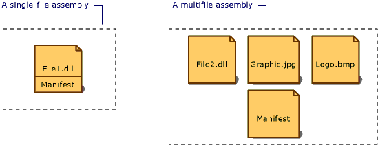

Манифест сборки
Любая сборка, статическая или динамическая, содержит коллекцию данных с описанием того, как ее элементы связаны друг с другом. Эти метаданные содержатся в манифесте сборки. Манифест сборки содержит все метаданные, необходимые для задания требований сборки к версиям и удостоверения безопасности, а также все метаданные, необходимые для определения области действия сборки и разрешения ссылок на ресурсы и классы. Манифест сборки может храниться в PE-файле (EXE или DLL) с кодом MSIL или же в отдельном PE-файле, содержащем только данные манифеста.
На следующей иллюстрации показаны различные способы хранения манифеста сборки.

Для сборки с одним связанным файлом манифест включается в PE-файл, чтобы получить однофайловую сборку. Создать многофайловую сборку можно, включив в нее отдельный файл манифеста или же добавив манифест в один из PE-файлов сборки.
Манифест сборки предназначен для следующих задач:
перечисление файлов, составляющих сборку;
сопоставление ссылок на типы и ресурсы сборки с файлами, содержащими объявления и реализации этих типов и ресурсов;
перечисление других сборок, от которых зависит эта сборка;
обеспечение косвенного обращения пользователей сборки к подробностям ее реализации;
предоставление собственного описания сборки;
Содержание манифеста сборки
В следующей таблице показаны данные, содержащиеся в манифесте сборки. Первые четыре элемента — имя сборки, номер версии, язык и региональные параметры и данные строгого имени — составляют удостоверение сборки.
| Сведения | Описание |
|---|---|
| Имя сборки | Текстовая строка, задающая имя сборки. |
| Номер версии | Основной и дополнительный номера версии, номер редакции и номер построения. Среда CLR использует их для применения политики управления версиями. |
| culture | Сведения о поддерживаемых сборкой языке или региональных параметрах. Эти сведения должны использоваться только для назначения сборки в качестве сопутствующей сборки, содержащей сведения о языке или региональных параметрах (сборка, содержащая сведения о языке и региональных параметрах, автоматически считается сопутствующей). |
| Данные о строгом имени | Открытый ключ издателя, если для сборки задано строгое имя. |
| Список всех файлов сборки | Хэш и имя каждого входящего в сборку файла. Обратите внимание, что все входящие в сборку файлы должны находиться в той же папке, что и файл с манифестом сборки. |
| Сведения о ссылках на типы | Сведения, используемые средой выполнения для сопоставления ссылок на типы с файлами, содержащими их объявления и реализации. Это касается типов, которые экспортируются сборкой. |
| Сведения о ссылках на сборки | Список других сборок, на которые имеются статические ссылки из данной сборки. Каждая ссылка включает в себя имя зависимой сборки, метаданные сборки (версию, язык и региональные параметры, операционную систему и т.д.) и открытый ключ, если у сборки есть строгое имя. |
С помощью задания атрибутов сборки в коде можно добавить или изменить некоторые данные в манифесте сборки. Можно изменить данные о версии и информационные атрибуты, включая сведения о товарном знаке, авторском праве, продукте, компании и информационной версии. Полный список атрибутов сборки см. в разделе Настройка атрибутов сборки.